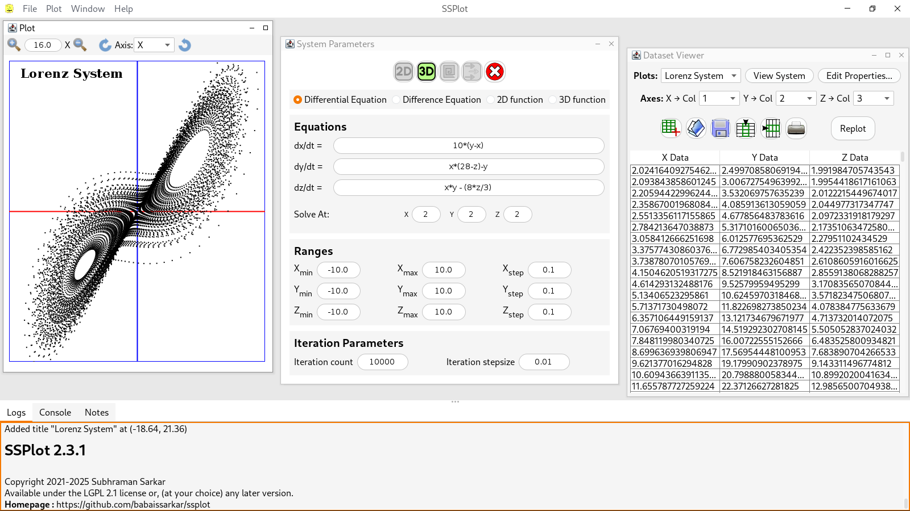

babaissarkar's Github Page
Hello, this is main page for all of my projects!
I currently have 5 repositories in Github :
- PRPlayer, a CCG/TCG player,
- myfnts, a repository for my fonts Exodia, FProject and any new ones I may be designing in the future. FProject is also available from Open Font Library.
- math2pic is a collection of some small scripts I have written to use LaTeX equations in Markdown documents.
- prosder is a simple command driven graphics language.
- SSPlot is a 2d and 3d datafile plotter, and simple nonlinear dynamics simulator.

- Source of my Battle for Wesnoth campaign, Journey of a Frost Mage, which is available from the Battle for Wesnoth 1.16 add-ons server. The official Battle for Wesnoth forum thread is here.
- Some time ago I've also decided to create my own fork of the MyOpenLab project to make it compatible with recent versions of the Java® runtime. It also has a AppImage build of MyOpenLab with limited functionality. MyOpenLab is a visual block like programming environment, originally available from here.
You can look at the corresponding repositories for further information.
This is all for now, but let's look forward to something great!
Great news! My book is now available for buying at Amazon!. Buy this would be a great idea to support my work.
Many thanks for visiting.:)
My Repository